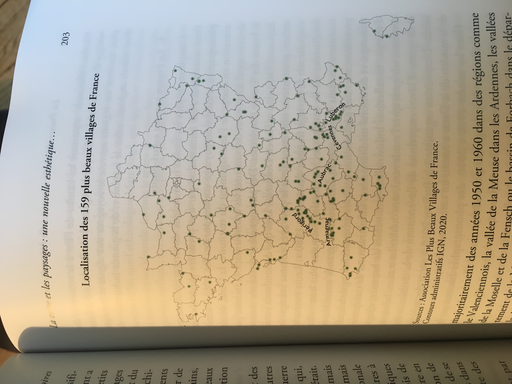
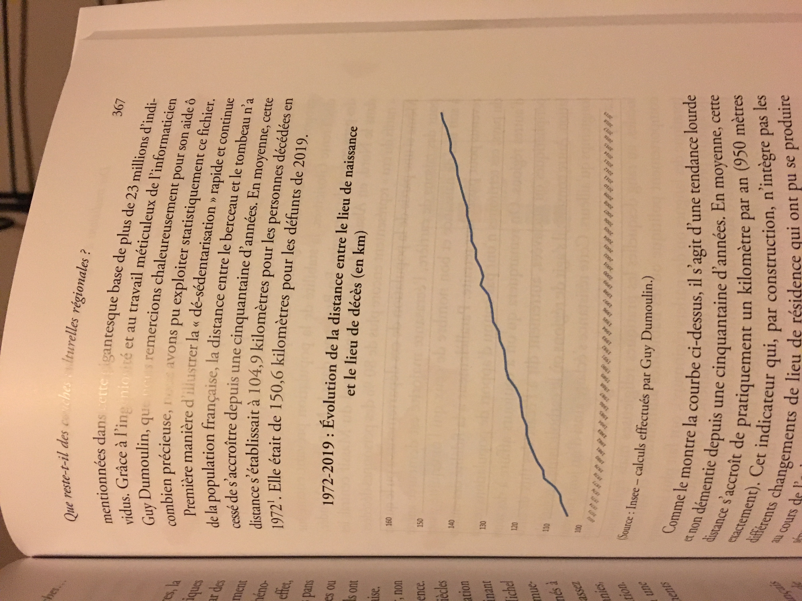
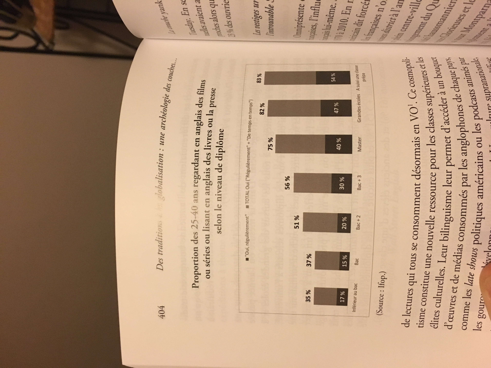

Livre de sociologie de 2021, décrivant les mutations sociales depuis une trentaine d’années, et le nouveau visage de la France.
I – Des usines aux zones commerciales et aux parcs de loisirs : un nouveau modèle économique
Fermeture des usines au profit des entrepôts (Amazon par ex), des grandes zones commerciales et des parcs d’attraction (Disneyland Paris : 7% du chiffre d’affaire de l’ensemble du tourisme en France !). Déclin du nombre de professions agricoles, de bateaux de pêche…
II – La France désirable : une nouvelle hiérarchie des territoires
Gentrification rurale : Perche et Drôme deviennent attractifs car bol de nature peu cher. Maison individuelle avec jardin, barbecue en été : style majoritaire de la façon d’habiter.

III – De la moyennisation à la polarisation des styles de vie
Chalets d’altitude ultra chers, ouverts à la clientèle internationale. Gifi, Dacia, Leboncoin en plein essor.
IV – Les nouveaux visages des classes sociales : les métiers de la France d’après
Aides soignantes, service à la personne, chômage.
V – Des traditions à la globalisation : une archéologie des couches culturelles
Restes : religion catholique, accent, rugby, beurre ou huile d’olive. Mais Macdonalds, kebabs, tacos…


Amicitia
Référence
2021-12 : Constituendi
Retour à l'accueil des fiches de lecture
Retour à l'accueil général